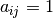
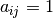
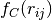

More Complicated Simple Reactive Force Field (MCSMRFF)¶
A custom force field for the implementation of reactive, directional bonds in Molecular Dynamics. Force field encompasses Tersoff potentials, Coulombic potentials, and Lennard-Jones potentials. This codebase includes three main codes:
- LAMMPs code adjustment for implementing MCSMRFF
- Training set generator
- Automatic parameterization method
The Force Field¶
The MCSMRFF force field works as follows:
- All atoms within some cutoff are described by Lennard-Jones (LJ) and Coulomb potentials
- Those atoms for which it is defined, will also have the Tersoff potential applied to it.
- All remaining atomic interactions will be described by the Optimized Potential for Liquid Simulation (OPLS-AA) forcefield.
Using the pair_style hybrid/overlay command, we can specify the pair styles of all atoms to be a function of both Tersoff and a custom pair style: lj/cut/coul/inout. This is simply:
pair_style hybrid/overlay lj/cut/coul/inout alpha R_cut_inner R_cut_outer tersoff
Where  is a damping parameter (in inverse distance units), is an inner cutoff, and is an outer cutoff. The distinction between the two cutoffs is that it allows for a smooth transition between the pair style being completely “on” () and “off” (). When specifying pair coefficients, use the following syntax:
is a damping parameter (in inverse distance units), is an inner cutoff, and is an outer cutoff. The distinction between the two cutoffs is that it allows for a smooth transition between the pair style being completely “on” () and “off” (). When specifying pair coefficients, use the following syntax:
pair_coeff i j lj/cut/coul/inout epsilon_ij sigma_ij R_cut_inner
Where and .
The Tersoff Potential (1, 2, 3) is well described on the LAMMPs website, but in short describes 3-body atomic interactions as follows:
![E &= \frac{1}{2} \sum_i \sum_{j\ne i} V_{ij}
V_{ij} &= f_C(r_{ij}) \left [a_{ij} f_R(r_{ij}) + b_{ij} f_A(r_{ij})\right ]
f_C(r) &= \left \{ \begin{matrix} 1 &,& r < R-D \\ \frac{1}{2}-\frac{1}{2}sin(\frac{\pi}{2}\frac{r-R}{D}) &,& R-D < r < R+D \\ 0 &,& r > R+D \end{matrix} \right.
f_R(r) &= A e^{-\lambda_1 r}
f_A(r) &= -B e^{-\lambda_2 r}
a_{ij} &= (1+\alpha^n\eta_{ij}^n)^{-\frac{1}{2n}}
\eta_{ij} &= \sum_{k\ne i,j} f_C(r_{ik})e^{\lambda_4^m(r_{ij}-r_{ik})^m}
b_{ij} &= (1+\beta^n\xi_{ij}^n)^{-\frac{1}{2n}}
\xi_{ij} &= \sum_{k\ne i,j}f_C(r_{ik})g(\theta_{ijk})e^{\lambda_3^m(r_{ij}-r_{ik})^m}
g(\theta) &= \gamma_{ijk} \left ( 1 + \frac{c^2}{d^2} - \frac{c^2}{\left[ d^2 + (cos\theta_{ijk} - cos\theta_0)^2\right ]} \right )](_images/math/fe00773512aeee41b576c98c782978fb74e1b3eb.png)
Note, this is not the “pure” original implementaion by Tersoff, but instead a generalization to accomodate updates to the method. Fundamentally, the Tersoff potential works by describing potential as a function of , the repulsive term, and , the attractive term. A smoothing function, , is applied so as to maintatain a continuous transition for a cutoff distance. is included to account for the bond-order, and is assumed to be a monotonically decreasing function of the coordination of atoms i and j. That is, , where z describes the coordination number. is also a function of , which counts the number of bonds to atom i (excluding i-j). is poorly described in the original implementation, but seems to describe a correction term for systems in which  is exponentially large. This occurs for atoms outside of the first-neighbor shell. That is to say that the repulsive term decreases for atoms further away. Interestingly enough, this implementation of the Tersoff potential is not used in LAMMPs, and further not used in example implementations by Tersoff. Thus, it is typical for . Finally, the function
is exponentially large. This occurs for atoms outside of the first-neighbor shell. That is to say that the repulsive term decreases for atoms further away. Interestingly enough, this implementation of the Tersoff potential is not used in LAMMPs, and further not used in example implementations by Tersoff. Thus, it is typical for . Finally, the function  describes the angular contribution to the bonding terms.
describes the angular contribution to the bonding terms.
To accomodate variations of this potential, m and are used. scales the angular contribution to , and m changes from 3 to 1 depending on whether the Nord et al. variation is to be used.
Looking through these equations, the following are all terms that we must parameterize (note, we follow the trend of setting ):
R - The cutoff distance at which 50% of the potential is in effect.
D - The buffer distance before and after R for the smoothing function .
A - The constant scalar for the repulsive function .
- The exponential decay of the repulsive function .
B - The constant scalar for the repulsive function .
- The exponential decay of the attractive function .
n - An exponential to decay factor of to accomodate for the change in decay rate of low and high coordinations .
beta - A scalar for the impact of the coordination contribution .
m - An exponential to accomodate the Tersoff potential (3) or the Nord variation (1).
- The exponential factor of the bond coordination term .
- Scaling term for the impact of the angular contribution to the bond coordination.
c - How strong the angular contribution is to the bond coordination.
d - How sharp the angular contribution is to the bond coordination.
- The minimum angle for which this contribution is minimized.
Installation¶
Download LAMMPS (older versions here). Some versions will not work - the 7 Dec 2015 is the one we’ve tested the most, so use that one.
Open a terminal in the src directory in your lammps folder
In your LAMMPS src directory run make yes-manybody
If you don’t have an SSH key, generate one like this (if you do, skip to step 8):
ssh-keygen -t rsa -b 4096 -C "your_email@example.com" #Creates an ssh key, using your GitHub e-mail as a label
When prompted to “Enter a file in which to save the key,” press Enter
If asked to Overwrite, enter ‘y’
At the prompt, type a secure passphrase
Retype your secure passphrase
Add the new SSH key to your GitHub account
gedit ~/.ssh/id_rsa.pub
In the top right corner of any GitHub page in your browser, click on your profile photo, then click ‘Settings’
In the user settings sidebar, click ‘SSH keys’
Click ‘New SSH key’
In the “Title” field, add a descriptive label for the new key
Copy and Paste the contents from the ‘id_rsa.pub’ file into the “Key” field
Click ‘Add SSH key’
Load your keys into your SSH agent
eval "$(ssh-agent -s)" ssh-add
Enter passphrase
Test your SSH connection
ssh -T git@github.com
You should see the message “Hi ‘username’! You’ve successfully authenicated, but GitHub does not provide shell access.”
Clone repository wherever
git clone git@github.com:hherbol/Grad-MCSMRFF.git
Copy over contents of Grad-MCSMRFF/LAMMPS to your lammps src folder. Note, this overwrites the min.h and pair_tersoff.h files.
Make using the new Makefile.mcsmrff
make mcsmrff -j 4
Add the path of Grad-MCSMRFF/MCSMRFF/pys to your PYTHONPATH variable:
echo 'export PYTHONPATH=/path/to/Grad-MCSMRFF/MCSMRFF/pys:$PYTHONPATH' >> ~/.zshrc
You’re done! Now you can use lammps with the lmp_mcsmrff file in your lammps/src directory.